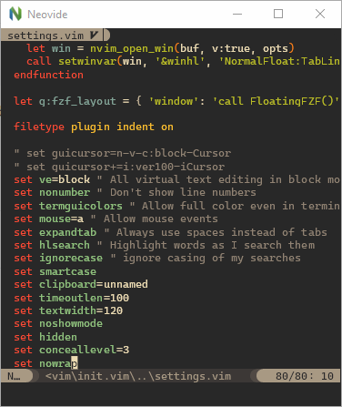

Neovide
Neovide

This is a simple, no-nonsense, cross-platform graphical user interface for Neovim (an aggressively refactored and updated Vim editor). Where possible there are some graphical improvements, but functionally it should act like the terminal UI.
If you're looking for the Neovide source code, that can be found
here. To search within the docs, you can simply press s or
click the magnifying glass icon in the top left to bring up the search bar.
Installing through a package manager or building from source? no problem!
Want to see a list of all the available features? here you go!
Looking to configure your neovide? we've got you covered!

Screenshot of Neovide running on Windows
Features
This should be a standard, fully-featured Neovim GUI. Beyond that there are some visual niceties listed below :)
Ligatures
Supports ligatures and font shaping.

Animated Cursor
Cursor animates into position with a smear effect to improve tracking of cursor position.

Smooth Scrolling
Scroll operations on buffers in neovim will be animated smoothly pixel wise rather than line by line at a time.

Animated Windows
Windows animate into position when they are moved making it easier to see how layout changes happen.

Blurred Floating Windows
The backgrounds of floating windows are blurred improving the visual separation between foreground and background from built in window transparency.

Emoji Support
Font fallback supports rendering of emoji not contained in the configured font.

WSL Support
Neovide supports displaying a full gui window from inside wsl via the --wsl command argument.
Communication is passed via standard io into the wsl copy of neovim providing identical experience
similar to Visual Studio Code's
Remote Editing.
Connecting to an existing Neovim instance
Neovide supports connecting to an already running instance of Neovim through the following communication channels:
- TCP
- Unix domain sockets (Unix-like platforms only)
- Named pipes (Windows only)
This is enabled by specifying the --server <address> command line argument. The address is
interpreted as a TCP/IPv4/IPv6 address if it contains a colon :. Otherwise, it's
interpreted as a Unix domain socket path on Unix-like systems and as the name of a pipe on
Windows systems.
It's possible to quit the GUI while leaving the Neovim instance running by closing the Neovide
application window instead of issuing a :q command.
One use case is to attach a GUI running on a local machine to a Neovim instance on a remote machine over the network.
TCP Example
Note that exposing Neovim over TCP, even on localhost, is inherently less secure than using Unix Domain Sockets.
Launch Neovim as a TCP server (on port 6666) by running:
nvim --headless --listen localhost:6666
And then connect to it using:
/path/to/neovide --server=localhost:6666
By specifying to listen on localhost, you only allow connections from your local computer. If you are actually doing this over a network you will want to use SSH port forwarding for security, and then connect as before.
ssh -L 6666:localhost:6666 ip.of.other.machine nvim --headless --listen localhost:6666
Unix Domain Socket Example
Launch a Neovim instance listening on a Unix Domain Socket:
nvim --headless --listen some-existing-dir/my-nvim-instance.sock
And then connect to it using:
/path/to/neovide --server=some-existing-dir/my-nvim-instance.sock
Like TCP sockets, Unix Domain Sockets can be forwarded over SSH. Start a Neovim instance on another host with:
ssh -L /path/to/local/socket:/path/to/remote/socket ip.of.other.machine \
nvim --headless --listen /path/to/remote/socket
Then connect with:
/path/to/neovide --server=/path/to/local/socket
Windows Named Pipes Example
Launch a Neovim instances listening on a Named Pipe:
nvim --headless --listen //./pipe/some-known-pipe-name/with-optional-path
And then connect to it using:
/path/to/neovide --server=some-known-pipe-name/with-optional-path
Note: the pipe name passed to nvim must be prefixed with //./pipe/ but the server argument to
Neovide will add it if it is missing.
Some Nonsense ;)
To learn how to configure the following, head on over to the configuration section!
Railgun

Torpedo

Pixiedust

Sonic Boom

Ripple

Wireframe

Installation
Note: Neovide requires neovim version 0.10 or greater. See previous releases such as 0.5.0
if your distro is too slow with updating or you need to rely on older neovim versions.
Building instructions are somewhat limited at the moment. All the libraries Neovide uses are cross platform and should have support for Windows, Mac, and Linux. The rendering is based on OpenGL, so a good GPU driver will be necessary, the default drivers provided by virtual machines might not be enough. On Windows this should be enabled by default if you have a relatively recent system.
Binaries
Installing should be as simple as downloading the binary, making sure the nvim executable with
version 0.10 or greater is on your PATH environment variable, and running it. Everything should be
self contained.
The binaries are to be found on the release page.
Windows
Scoop
Scoop has Neovide in the extras bucket. Ensure you have the extras bucket,
and install:
$ scoop bucket list
main
extras
$ scoop install neovide
Windows Source
-
Install the latest version of Rust. I recommend https://rustup.rs/
-
Install CMake. I use chocolatey:
choco install cmake --installargs '"ADD_CMAKE_TO_PATH=System"' -y -
Install LLVM. I use chocolatey:
choco install llvm -y -
Ensure graphics libraries are up to date.
-
Build and install Neovide:
cargo install --git https://github.com/neovide/neovide.gitThe resulting binary can be found inside of
~/.cargo/binafterwards (99% of the time).
Mac
Homebrew
Neovide is available as Cask in Homebrew. It can be installed from the command line:
brew install --cask neovide
Neovide registers launched shells taking the user's preferred shell into account.
If you are encountering issues with Neovide not being found by your shell, you can try to add the
brew binary path to your PATH environment variable:
sudo launchctl config user path "$(brew --prefix)/bin:${PATH}"
For more information, see the Homebrew FAQ.
Mac Source
-
Install the latest version of Rust. Using homebrew:
brew install rustup-init -
Configure rust by running
rustup-init -
Install CMake. Using homebrew:
brew install cmake -
git clone https://github.com/neovide/neovide -
cd neovide -
cargo install --path .The resulting binary is to be found under
~/.cargo/bin. In case you want a nice application bundle: -
GENERATE_BUNDLE_APP=true GENERATE_DMG=true ./macos-builder/run -
open ./target/release/bundle/osx/Neovide.dmg
Linux
Arch Linux
Stable releases are packaged in the extra repository.
pacman -S neovide
If you want to run Neovide on X11, you'll also need libxkbcommon-x11.
pacman -S libxkbcommon-x11
To run a development version you can build from
the VCS package in the AUR. This can be built and
installed using an AUR helper or
by hand in the usual way.
To build from a non-default branch you can edit the PKGBUILD and add #branch-name to the end of
the source URL.
Nix
Stable releases are packaged in nixpkgs in the neovide package, there's no flake. As such, if you
just want to try it out in a transient shell, you can use this command.
Note: On non-NixOS systems, chances are you'll need to use nixGL as wrapper for neovide.
nix-shell -p neovide
NixOS
Just add neovide from nixpkgs to your environment.systemPackages in configuration.nix.
environment.systemPackages = with pkgs; [neovide];
Linux Source
-
Install necessary dependencies (adjust for your preferred package manager, probably most of this stuff is already installed, just try building and see)
-
Ubuntu/Debian
sudo apt install -y curl \ gnupg ca-certificates git \ gcc-multilib g++-multilib cmake libssl-dev pkg-config \ libfreetype6-dev libasound2-dev libexpat1-dev libxcb-composite0-dev \ libbz2-dev libsndio-dev freeglut3-dev libxmu-dev libxi-dev libfontconfig1-dev \ libxcursor-dev -
Fedora
sudo dnf install fontconfig-devel freetype-devel @development-tools \ libstdc++-static libstdc++-devel -
Arch
Do note that an AUR package already exists.
sudo pacman -S base-devel fontconfig freetype2 libglvnd sndio cmake \ git gtk3 python sdl2 vulkan-intel libxkbcommon-x11
-
-
Install Rust
curl --proto '=https' --tlsv1.2 -sSf "https://sh.rustup.rs" | sh -
Fetch and build
cargo install --git https://github.com/neovide/neovideThe resulting binary can be found inside of
~/.cargo/binafterwards, you might want to add this to yourPATHenvironment variable.
Configuration
Global Vim Settings
Neovide supports settings via global variables with a neovide prefix. They enable configuring many parts of the editor and support dynamically changing them at runtime.
init.vim and init.lua helpers
Hello, is this Neovide?
Not really a configuration option, but g:neovide only exists and is set to v:true if this Neovim
is in Neovide. Useful for configuring things only for Neovide in your init.vim/init.lua:
VimScript:
if exists("g:neovide")
" Put anything you want to happen only in Neovide here
endif
Lua:
if vim.g.neovide then
-- Put anything you want to happen only in Neovide here
end
You can also query the version with:
echo g:neovide_version
Lua:
vim.print(vim.g.neovide_version)
Or inspect the more detailed channel information:
Lua:
lua vim.print(vim.api.nvim_get_chan_info(vim.g.neovide_channel_id))
Display
Font
VimScript:
set guifont=Source\ Code\ Pro:h14
Lua:
vim.o.guifont = "Source Code Pro:h14" -- text below applies for VimScript
Controls the font used by Neovide. Also check the config file to see how to
configure features. This is the only setting which is actually controlled through an option, and
as such it's also documented in :h guifont. But to sum it up and also add Neovide's extension:
- The basic format is
Primary\ Font,Fallback\ Font\ 1,Fallback\ Font\ 2:option1:option2:option3, while you can have as many fallback fonts as you want (even 0) and as many options as you want (also even 0). - Fonts
- are separated with
,(commas). - can contain spaces by either escaping them or using
_(underscores).
- are separated with
- Options
- apply to all fonts at once.
- are separated from the fonts and themselves through
:(colons). - can be one of the following:
hX— Sets the font size toXpoints, whileXcan be any (even floating-point) number.wX(available since 0.11.2) — Sets the width relative offset to beXpoints, whileXcan be again any number. Negative values shift characters closer together, positive values shift them further apart.b— Sets the font bold.i— Sets the font italic.#e-X(available since 0.10.2) — Sets edge pixels to be drawn opaquely or with partial transparency, whileXis a type of edging:- antialias (default)
- subpixelantialias
- alias
#h-X(available since 0.10.2) - Sets level of glyph outline adjustment, whileXis a type of hinting:- full (default)
- normal
- slight
- none
- Some examples:
Hack,Noto_Color_Emoji:h12:b— Hack at size 12 in bold, with Noto Color Emoji as fallback should Hack fail to contain any glyph.Roboto_Mono_Light:h10— Roboto Mono Light at size 10.Hack:h14:i:#e-subpixelantialias:#h-none
Line spacing
VimScript:
set linespace=0
Lua:
vim.opt.linespace = 0
Controls spacing between lines, may also be negative. Setting linespace can result in vertical gaps
when rendering box drawing characters, see Box
Drawing section on how to fix this.
Scale
VimScript:
let g:neovide_scale_factor = 1.0
Lua:
vim.g.neovide_scale_factor = 1.0
Available since 0.10.2.
In addition to setting the font itself, this setting allows to change the scale without changing the whole font definition. Very useful for presentations. See the FAQ section about this for a nice recipe to bind this to a hotkey.
Text Gamma and Contrast
VimScript:
let g:neovide_text_gamma = 0.0
let g:neovide_text_contrast = 0.5
Lua:
vim.g.neovide_text_gamma = 0.0
vim.g.neovide_text_contrast = 0.5
Available since 0.13.0.
You can fine tune the gamma and contrast of the text to your liking. The defaults is a good compromise that gives readable text on all backgrounds and an accurate color representation. But if that doesn't suit you, and you want to emulate the Alacritty font rendering for example you can use a gamma of 0.8 and a contrast of 0.1.
Note a gamma of 0.0, means standard sRGB gamma or 2.2. Also note that these settings don't necessarily apply immediately due to caching of the fonts.
Padding
VimScript:
let g:neovide_padding_top = 0
let g:neovide_padding_bottom = 0
let g:neovide_padding_right = 0
let g:neovide_padding_left = 0
Lua:
vim.g.neovide_padding_top = 0
vim.g.neovide_padding_bottom = 0
vim.g.neovide_padding_right = 0
vim.g.neovide_padding_left = 0
Available since 0.10.4.
Controls the space between the window border and the actual Neovim, which is filled with the background color instead.
Background Color (Deprecated, Currently macOS only)
This configuration is deprecated now and might be removed in the future. In
#2168, we have made Neovide control the title bar
color itself. The color of title bar now honors neovide_opacity. If you want
a transparent title bar, setting neovide_opacity is sufficient.
VimScript:
" g:neovide_opacity should be 0 if you want to unify transparency of content and title bar.
let g:neovide_opacity = 0.0
let g:transparency = 0.8
let g:neovide_background_color = '#0f1117'.printf('%x', float2nr(255 * g:transparency))
Lua:
-- Helper function for transparency formatting
local alpha = function()
return string.format("%x", math.floor(255 * vim.g.transparency or 0.8))
end
-- g:neovide_opacity should be 0 if you want to unify transparency of content and title bar.
vim.g.neovide_opacity = 0.0
vim.g.transparency = 0.8
vim.g.neovide_background_color = "#0f1117" .. alpha()
Available since 0.10. Deprecated in 0.12.2.

Setting g:neovide_background_color to a value that can be parsed by
csscolorparser-rs will set the color of the whole
window to that value.
Note that g:neovide_opacity should be 0 if you want to unify transparency of content and
title bar.
Title Bar Color (Currently Windows only)
Available since 0.14.0.

Setting g:neovide_title_background_color to a value that can be parsed by
csscolorparser-rs will set
color the title window to that value.
VimScript:
let g:neovide_title_background_color = "green"
let g:neovide_title_text_color = "pink"
lua:
vim.g.neovide_title_background_color = string.format(
"%x",
vim.api.nvim_get_hl(0, {id=vim.api.nvim_get_hl_id_by_name("Normal")}).bg
)
vim.g.neovide_title_text_color = "pink"
Window Blur (Currently macOS only)
VimScript:
let g:neovide_window_blurred = v:true
Lua:
vim.g.neovide_window_blurred = true
Available since 0.12.
Setting g:neovide_window_blurred toggles the window blur state.
The blurred level respects the g:neovide_opacity value between 0.0 and 1.0.
Floating Blur Amount
VimScript:
let g:neovide_floating_blur_amount_x = 2.0
let g:neovide_floating_blur_amount_y = 2.0
Lua:
vim.g.neovide_floating_blur_amount_x = 2.0
vim.g.neovide_floating_blur_amount_y = 2.0
Available since 0.9.
Setting g:neovide_floating_blur_amount_x and g:neovide_floating_blur_amount_y controls the blur
radius on the respective axis for floating windows.
Floating Shadow
VimScript:
let g:neovide_floating_shadow = v:true
let g:neovide_floating_z_height = 10
let g:neovide_light_angle_degrees = 45
let g:neovide_light_radius = 5
Lua:
vim.g.neovide_floating_shadow = true
vim.g.neovide_floating_z_height = 10
vim.g.neovide_light_angle_degrees = 45
vim.g.neovide_light_radius = 5
Available since 0.12.0.
Setting g:neovide_floating_shadow to false will disable the shadow borders for floating windows.
The other variables configure the shadow in various ways:
g:neovide_floating_z_heightsets the virtual height of the floating window from the ground planeg:neovide_light_angle_degreessets the angle from the screen normal of the casting lightg:neovide_light_radiussets the radius of the casting light
Floating Corner Radius
VimScript:
let g:neovide_floating_corner_radius = 0.0
Lua:
vim.g.neovide_floating_corner_radius = 0.0
Setting g:neovide_floating_corner_radius to 0.0 will disable the corner radius. The value of
floating_corner_radius ranges from 0.0 to 1.0, representing a percentage of the line height.
Transparency
VimScript:
let g:neovide_opacity = 0.8
let g:neovide_normal_opacity = 0.8
Lua:
vim.g.neovide_opacity = 0.8
vim.g.neovide_normal_opacity = 0.8
Available since 0.14.0.

Setting g:neovide_opacity to a value between 0.0 and 1.0 will set the opacity of the window
to that value.
g:neovide_normal_opacity sets the opacity for the normal background color.
Set it to 1 to disable.
Show Border (Currently macOS only)
VimScript:
let g:neovide_show_border = v:true
Lua:
vim.g.neovide_show_border = true
Draw a grey border around opaque windows only.
Default: false
Position Animation Length
VimScript:
let g:neovide_position_animation_length = 0.15
Lua:
vim.g.neovide_position_animation_length = 0.15
Determines the time it takes for a window to complete animation from one position to another
position in seconds, such as :split. Set to 0 to disable.
Scroll Animation Length
VimScript:
let g:neovide_scroll_animation_length = 0.3
Lua:
vim.g.neovide_scroll_animation_length = 0.3
Sets how long the scroll animation takes to complete, measured in seconds. Note that the timing is not completely accurate and might depend slightly on have far you scroll, so experimenting is encouraged in order to tune it to your liking.
Far scroll lines
Available since 0.12.0.
VimScript:
let g:neovide_scroll_animation_far_lines = 1
Lua:
vim.g.neovide_scroll_animation_far_lines = 1
When scrolling more than one screen at a time, only this many lines at the end of the scroll action will be animated. Set it to 0 to snap to the final position without any animation, or to something big like 9999 to always scroll the whole screen, much like Neovide <= 0.10.4 did.
Progress Bar
VimScript:
let g:neovide_progress_bar_enabled = v:true
let g:neovide_progress_bar_height = 5.0
let g:neovide_progress_bar_animation_speed = 200.0
let g:neovide_progress_bar_hide_delay = 0.2
Lua:
vim.g.neovide_progress_bar_enabled = true
vim.g.neovide_progress_bar_height = 5.0
vim.g.neovide_progress_bar_animation_speed = 200.0
vim.g.neovide_progress_bar_hide_delay = 0.2
Unreleased yet.
g:neovide_progress_bar_enabledsets whether the progress bar is enabled.g:neovide_progress_bar_heightsets the height of the progress bar in pixels.g:neovide_progress_bar_animation_speedsets the speed of the progress bar animation.g:neovide_progress_bar_hide_delaysets the delay in seconds before the progress bar is hidden after reaching 100%.
Hiding the mouse when typing
VimScript:
let g:neovide_hide_mouse_when_typing = v:false
Lua:
vim.g.neovide_hide_mouse_when_typing = false
By setting this to v:true, the mouse will be hidden as soon as you start typing. This setting
only affects the mouse if it is currently within the bounds of the neovide window. Moving the
mouse makes it visible again.
Underline automatic scaling
VimScript:
let g:neovide_underline_stroke_scale = 1.0
Lua:
vim.g.neovide_underline_stroke_scale = 1.0
Available since 0.12.0.
Setting g:neovide_underline_stroke_scale to a floating point will increase or decrease the stroke
width of the underlines (including undercurl, underdash, etc.). If the scaled stroke width is less
than 1, it is clamped to 1 to prevent strange aliasing.
Note: This is currently glitchy if the scale is too large, and leads to some underlines being clipped by the line of text below.
Theme
VimScript:
let g:neovide_theme = 'auto'
Lua:
vim.g.neovide_theme = 'auto'
Available since 0.11.0.
Set the background option when Neovide
starts. Possible values: light, dark, auto. On systems that support it, auto will mirror the
system theme, and will update background when the system theme changes.
Unreleased yet.
NOTE: The meaning of the setting has changed in 0.16.0. The default value of the Neovim
background option is now always
automatically set, and updates according to the system theme, as long as the user has not set it to
something else.
Sets the theme of the Neovide window on systems that supports it.
auto- Use the system themelight- Set the window theme to lightdark- Set the window theme to darkbg_color- Determine window theme from the Neovide normal/background color
bg, which would mirror the Neovim background option is not supported yet, due to technical
challenges. If you need that now it's best to set both neovide_theme and background to the same.
The default is auto, except when using --frame transparent on macOS to preserve the old visual
look with that configuration.
Supported platforms:
- Windows
- MacOS
- Linux Wayland with client-side decorations (Most notably Gnome)
Layer grouping
VimScript:
let g:experimental_layer_grouping = v:false
Lua:
vim.g.experimental_layer_grouping = false
Available since 0.13.1.
Group non-emtpy consecutive layers (zindex) together, so that the shadows and blurring is done for the whole group instead of each individual layer. This can get rid of some shadowing and blending artifacts, but cause worse problems like #2574.
Functionality
Refresh Rate
VimScript:
let g:neovide_refresh_rate = 60
Lua:
vim.g.neovide_refresh_rate = 60
Setting g:neovide_refresh_rate to a positive integer will set the refresh rate of the app. This is
limited by the refresh rate of your physical hardware, but can be lowered to increase battery life.
This setting is only effective when not using vsync, for example by passing --no-vsync on the
commandline.
Idle Refresh Rate
VimScript:
let g:neovide_refresh_rate_idle = 5
Lua:
vim.g.neovide_refresh_rate_idle = 5
Available since 0.10.
Setting g:neovide_refresh_rate_idle to a positive integer will set the refresh rate of the app
when it is not in focus.
This might not have an effect on every platform (e.g. Wayland).
No Idle
VimScript:
let g:neovide_no_idle = v:true
Lua:
vim.g.neovide_no_idle = true
Setting g:neovide_no_idle to a boolean value will force neovide to redraw all the time. This can
be a quick hack if animations appear to stop too early.
Confirm Quit
VimScript:
let g:neovide_confirm_quit = v:true
Lua:
vim.g.neovide_confirm_quit = true
If set to true, quitting while having unsaved changes will require confirmation. Enabled by
default.
Detach On Quit
Possible values are always_quit, always_detach, or prompt. Set to prompt by default.
VimScript:
let g:neovide_detach_on_quit = 'always_quit'
Lua:
vim.g.neovide_detach_on_quit = 'always_quit'
This option changes the closing behavior of Neovide when it's used to connect to a remote Neovim instance. It does this by switching between detaching from the remote instance and quitting Neovim entirely.
Fullscreen
VimScript:
let g:neovide_fullscreen = v:true
Lua:
vim.g.neovide_fullscreen = true
Setting g:neovide_fullscreen to a boolean value will set whether the app should take up the entire
screen. This uses the so called "windowed fullscreen" mode that is sometimes used in games which
want quick window switching.
Simple Fullscreen (MacOS only)
VimScript:
let g:neovide_macos_simple_fullscreen = v:true
Lua:
vim.g.neovide_macos_simple_fullscreen = true
Available since 0.15.1.
Setting neovide_macos_simple_fullscreen will hide the dock and menu bar for MacOS.
This won’t work if the window was already in the native fullscreen.
Remember Previous Window Size
VimScript:
let g:neovide_remember_window_size = v:true
Lua:
vim.g.neovide_remember_window_size = true
Setting g:neovide_remember_window_size to a boolean value will determine whether the window size
from the previous session or the default size will be used on startup. The commandline option
--size will take priority over this value.
Profiler
VimScript:
let g:neovide_profiler = v:false
Lua:
vim.g.neovide_profiler = false
Setting this to v:true enables the profiler, which shows a frametime graph in the upper left
corner.
Cursor hack
VimScript:
let g:neovide_cursor_hack = v:true
Lua:
vim.g.neovide_cursor_hack = true
Prevents the cursor from flickering to the command line when it shouldn't. This will be disabled by default when Neovim properly sends the UI busy events and the hack is no longer needed. NOTE: In some cases the hack itself is buggy and prevents the cursor from moving to the command line when it should. In that case you can try to disable it, especially if you are not using cursor animations and the flickering does not bother as much.
Input Settings
macOS Option Key is Meta
Possible values are both, only_left, only_right, none. Set to none by default.
VimScript:
let g:neovide_input_macos_option_key_is_meta = 'only_left'
Lua:
vim.g.neovide_input_macos_option_key_is_meta = 'only_left'
Available since 0.13.0.
Interprets Alt + whatever actually as <M-whatever>, instead of sending the
actual special character to Neovim.
IME
VimScript:
let g:neovide_input_ime = v:true
Lua:
vim.g.neovide_input_ime = true
Available since 0.11.0.
This lets you disable the IME input. For example, to only enables IME in input mode and when searching, so that you can navigate normally, when typing some East Asian languages, you can add a few auto commands:
augroup ime_input
autocmd!
autocmd InsertLeave * execute "let g:neovide_input_ime=v:false"
autocmd InsertEnter * execute "let g:neovide_input_ime=v:true"
autocmd CmdlineLeave [/\?] execute "let g:neovide_input_ime=v:false"
autocmd CmdlineEnter [/\?] execute "let g:neovide_input_ime=v:true"
augroup END
local function set_ime(args)
if args.event:match("Enter$") then
vim.g.neovide_input_ime = true
else
vim.g.neovide_input_ime = false
end
end
local ime_input = vim.api.nvim_create_augroup("ime_input", { clear = true })
vim.api.nvim_create_autocmd({ "InsertEnter", "InsertLeave" }, {
group = ime_input,
pattern = "*",
callback = set_ime
})
vim.api.nvim_create_autocmd({ "CmdlineEnter", "CmdlineLeave" }, {
group = ime_input,
pattern = "[/\\?]",
callback = set_ime
})
Touch Deadzone
VimScript:
let g:neovide_touch_deadzone = 6.0
Lua:
vim.g.neovide_touch_deadzone = 6.0
Setting g:neovide_touch_deadzone to a value equal or higher than 0.0 will set how many pixels the
finger must move away from the start position when tapping on the screen for the touch to be
interpreted as a scroll gesture.
If the finger stayed in that area once lifted or the drag timeout happened, however, the touch will be interpreted as tap gesture and the cursor will move there.
A value lower than 0.0 will cause this feature to be disabled and all touch events will be interpreted as scroll gesture.
Touch Drag Timeout
VimScript:
let g:neovide_touch_drag_timeout = 0.17
Lua:
vim.g.neovide_touch_drag_timeout = 0.17
Setting g:neovide_touch_drag_timeout will affect how many seconds the cursor has to stay inside
g:neovide_touch_deadzone in order to begin "dragging"
Once started, the finger can be moved to another position in order to form a visual selection. If
this happens too often accidentally to you, set this to a higher value like 0.3 or 0.7.
Cursor Settings
Animation Length


VimScript:
let g:neovide_cursor_animation_length = 0.150
Lua:
vim.g.neovide_cursor_animation_length = 0.150
Setting g:neovide_cursor_animation_length determines the time it takes for the cursor to complete
its animation in seconds. Set to 0 to disable.
Short Animation Length
VimScript:
let g:neovide_cursor_short_animation_length = 0.04
Lua:
vim.g.neovide_cursor_short_animation_length = 0.04
Setting g:neovide_cursor_short_animation_length determines the time it takes for the cursor to complete
its animation in seconds for short horizontal travels of one or two characters, like when typing.
Animation Trail Size


VimScript:
let g:neovide_cursor_trail_size = 1.0
Lua:
vim.g.neovide_cursor_trail_size = 1.0
Range 0.0 to 1.0
Setting g:neovide_cursor_trail_size changes how much the back of the cursor trails the front. Set
to 1.0 to make the front jump to the destination immediately with a maximum trail size. A lower
value makes a smoother animation, with a shorter trail, but also adds lag.
Antialiasing
VimScript:
let g:neovide_cursor_antialiasing = v:true
Lua:
vim.g.neovide_cursor_antialiasing = true
Enables or disables antialiasing of the cursor quad. Disabling may fix some cursor visual issues.
Animate in insert mode
VimScript:
let g:neovide_cursor_animate_in_insert_mode = v:true
Lua:
vim.g.neovide_cursor_animate_in_insert_mode = true
If disabled, when in insert mode (mostly through i or a), the cursor will move like in other
programs and immediately jump to its new position.
Animate switch to command line
VimScript:
let g:neovide_cursor_animate_command_line = v:true
Lua:
vim.g.neovide_cursor_animate_command_line = true
If disabled, the switch from editor window to command line is non-animated, and the cursor jumps between command line and editor window immediately. Does not influence animation inside of the command line.
Unfocused Outline Width
VimScript:
let g:neovide_cursor_unfocused_outline_width = 0.125
Lua:
vim.g.neovide_cursor_unfocused_outline_width = 0.125
Specify cursor outline width in ems. You probably want this to be a positive value less than 0.5.
If the value is <=0 then the cursor will be invisible. This setting takes effect when the editor
window is unfocused, at which time a block cursor will be rendered as an outline instead of as a
full rectangle.
Animate cursor blink
VimScript:
let g:neovide_cursor_smooth_blink = v:false
Lua:
vim.g.neovide_cursor_smooth_blink = false
If enabled, the cursor will smoothly animate the transition between the cursor's on and off state.
The built in guicursor neovim option needs to be configured to enable blinking by having a value
set for both blinkoff, blinkon and blinkwait for this setting to apply.
Cursor Particles
There are a number of vfx modes you can enable which produce particles behind the cursor. These are
enabled by setting g:neovide_cursor_vfx_mode to one string or an array of the following constants.
None at all
VimScript:
" a string
let g:neovide_cursor_vfx_mode = ""
" or an array
let g:neovide_cursor_vfx_mode = ["", ""]
Lua:
<!-- a string -->
vim.g.neovide_cursor_vfx_mode = ""
<!-- or an array -->
vim.g.neovide_cursor_vfx_mode = {"", ""}
The default, no particles at all.
Railgun
VimScript:
let g:neovide_cursor_vfx_mode = "railgun"
Lua:
vim.g.neovide_cursor_vfx_mode = "railgun"
Torpedo
VimScript:
let g:neovide_cursor_vfx_mode = "torpedo"
Lua:
vim.g.neovide_cursor_vfx_mode = "torpedo"
Pixiedust
VimScript:
let g:neovide_cursor_vfx_mode = "pixiedust"
Lua:
vim.g.neovide_cursor_vfx_mode = "pixiedust"
Sonic Boom
VimScript:
let g:neovide_cursor_vfx_mode = "sonicboom"
Lua:
vim.g.neovide_cursor_vfx_mode = "sonicboom"
Ripple
VimScript:
let g:neovide_cursor_vfx_mode = "ripple"
Lua:
vim.g.neovide_cursor_vfx_mode = "ripple"
Wireframe
VimScript:
let g:neovide_cursor_vfx_mode = "wireframe"
Lua:
vim.g.neovide_cursor_vfx_mode = "wireframe"
Particle Settings
Options for configuring the particle generation and behavior.
Particle Opacity
VimScript:
let g:neovide_cursor_vfx_opacity = 200.0
Lua:
vim.g.neovide_cursor_vfx_opacity = 200.0
Sets the transparency of the generated particles.
Particle Lifetime
VimScript:
let g:neovide_cursor_vfx_particle_lifetime = 0.5
let g:neovide_cursor_vfx_particle_highlight_lifetime = 0.2
Lua:
vim.g.neovide_cursor_vfx_particle_lifetime = 0.5
vim.g.neovide_cursor_vfx_particle_highlight_lifetime = 0.2
Sets the amount of time the generated particles should survive.
neovide_cursor_vfx_particle_highlight_lifetime applies to sonicboom, ripple and wireframe,
and the rest to neovide_cursor_vfx_particle_lifetime
If neovide_cursor_vfx_particle_highlight_lifetime is set to 0 then
neovide_cursor_vfx_particle_lifetime is used.
Particle Density
VimScript:
let g:neovide_cursor_vfx_particle_density = 0.7
Lua:
vim.g.neovide_cursor_vfx_particle_density = 0.7
Sets the number of generated particles. The unit is the amount of particles per lines of travel.
Particle Speed
VimScript:
let g:neovide_cursor_vfx_particle_speed = 10.0
Lua:
vim.g.neovide_cursor_vfx_particle_speed = 10.0
Sets the speed of particle movement in pixels / second.
Particle Phase
VimScript:
let g:neovide_cursor_vfx_particle_phase = 1.5
Lua:
vim.g.neovide_cursor_vfx_particle_phase = 1.5
Only for the railgun vfx mode.
Sets the mass movement of particles, or how individual each one acts. The higher the value, the less particles rotate in accordance to each other, the lower, the more line-wise all particles become.
Particle Curl
VimScript:
let g:neovide_cursor_vfx_particle_curl = 1.0
Lua:
vim.g.neovide_cursor_vfx_particle_curl = 1.0
Only for the railgun vfx mode.
Sets the velocity rotation speed of particles. The higher, the less particles actually move and look more "nervous", the lower, the more it looks like a collapsing sine wave.
Automatic settings, should be turned on/off for debug purposes only
Note: These settings will be removed when the features are deemed stable. In most cases they are only here because the automatic detection of Neovim nightly versions does not always work.
Autodetect mouse grid
VimScript:
let g:neovide_has_mouse_grid_detection = v:true
Lua:
vim.g.neovide_has_mouse_grid_detection = true
Unreleased yet.
Requires Neovim 0.12.0.
Neovim will detect the mouse grid for much better mouse compatibility when enabled. This is automaticaly enabled starting from Neovim Nightly September 20. 2025. You should not try to enable it manually for unsupported versions, since the behaviour is undefined.
Commands
On startup, Neovide registers some commands for interacting
with the os and platform window. These are neovim commands
accessible via :{command name}.
Register/Unregister Right Click
On windows you can register a right click context menu item
to edit a given file with Neovide. This can be done at any
time by running the NeovideRegisterRightClick command. This can
be undone with the NeovideUnregisterRightClick command.
Focus Window
Running the NeovideFocus command will bring the platform
window containing Neovide to the front and activate it. This
is useful for tools like neovim_remote which can manipulate
neovim remotely or if long running tasks would like to
activate the Neovide window after finishing.
Open Config File (Unreleased yet)
Running the NeovideConfig command will open your Neovide
configuration file for editing. This provides a simple and
discoverable way to access your settings without needing to
know the platform-specific path to the file.
Command Line Reference
Neovide supports a few command line arguments for effecting things which couldn't be set using normal vim variables.
$ in front of a word refers to it being an "environment variable" which is checked for, some
settings only require it to be set in some way, some settings also use the contents.
Note: On macOS, it's not easy to specify command line arguments when launching Apps, you can use
Neovide Config File or launchctl setenv NEOVIDE_FRAME transparent to
apply those setting.
Information
Version
--version or -V
Prints the current version of neovide.
Help
--help or -h
Prints details about neovide. This will be a help page eventually.
Functionality
Frame
--frame or $NEOVIDE_FRAME
Can be set to:
full: The default, all decorations.none: No decorations at all. NOTE: Window cannot be moved nor resized after this.- (macOS only)
transparent: Transparent decorations including a transparent bar. - (macOS only)
buttonless: All decorations, but without quit, minimize or fullscreen buttons.
Window Size
--size=<width>x<height>
Sets the initial neovide window size in pixels.
Can not be used together with --maximized, or --grid.
Maximized
--maximized or $NEOVIDE_MAXIMIZED
Maximize the window on startup, while still having decorations and the status bar of your OS visible.
This is not the same as g:neovide_fullscreen, which runs Neovide in "exclusive fullscreen",
covering up the entire screen.
Can not be used together with --size, or --grid.
Grid Size
--grid [<columns>x<lines>]
Available since 0.12.0.
Sets the initial grid size of the window. If no value is given, it defaults to
columns/lines from init.vim/lua, see
columns and
lines.
If the --grid argument is not set then the grid size is inferred from the
window size.
Note: After the initial size has been determined and init.vim/lua processed,
you can set columns and
lines inside neovim
regardless of the command line arguments used. This has to be done before any
redraws are made, so it's recommended to put it at the start of the
init.vim/lua along with guifont and other related settings that can affect
the geometry.
Can not be used together with --size, or --maximized.
Log File
--log
Enables the log file for debugging purposes. This will write a file next to the executable containing trace events which may help debug an issue.
Multigrid
--no-multigrid or $NEOVIDE_NO_MULTIGRID
This disables neovim's multigrid functionality which will also disable floating window blurred backgrounds, smooth scrolling, and window animations. This can solve some issues where neovide acts differently from terminal neovim.
Fork
--fork or $NEOVIDE_FORK=0|1
Detach from the terminal instead of waiting for the Neovide process to terminate. This parameter has no effect when launching from a GUI.
No Idle
--no-idle or $NEOVIDE_IDLE=0|1
With idle on (default), neovide won't render new frames when nothing is happening.
With idle off (e.g. with --no-idle flag), neovide will constantly render new frames,
even when nothing changed. This takes more power and CPU time, but can possibly help
with frame timing issues.
Mouse Cursor Icon
--mouse-cursor-icon or $NEOVIDE_MOUSE_CURSOR_ICON="arrow|i-beam"
Available since 0.14.
This sets the mouse cursor icon to be used in the window.
TLDR; Neovim has not yet implemented the 'mouseshape' feature, meaning that the cursor will not be reactive respecting the context of any Neovim element such as tabs, buttons and dividers. For that reason, the Arrow cursor has been taken as the default due to its generalistic purpose.
Title (macOS Only)
--title-hidden or $NEOVIDE_TITLE_HIDDEN
Available since 0.12.2.
This sets the window title to be hidden on macOS.
Application Icon
--icon <path>
Unreleased yet.
This sets a custom application icon. A default icon is bundled with Neovide.
sRGB
--no-srgb, --srgb or $NEOVIDE_SRGB=0|1
Request sRGB support on the window. The command line parameter takes priority over the environment variable.
On Windows, Neovide does not actually render with sRGB, but it's still enabled by default to work around neovim/neovim/issues/907.
On macOS, this option works as expected to switch sRGB color space. The
default is --no-srgb to keep the behavior of previous versions. If you want
to enable srgb, please use --srgb.
Other platforms should not need it, but if you encounter either startup crashes or wrong colors, you can try to swap the option.
Notes on macOS: Traditional terminals do not use sRGB by default. This is how most terminals on Windows and Linux do. Neovide follows this rule. However, Terminal of macOS changes the default to sRGB. Other terminal emulators, like Alacritty, Kitty, may follow Apple and use sRGB. Some may offer no function to switch it off currently. So you might get different color of the same value in Neovide surprisingly. Please read neovide/neovide/issues/1102 for more details.
Tabs
--no-tabs, --tabs or $NEOVIDE_TABS=0|1
By default, Neovide opens files given directly to Neovide (not NeoVim through --!) in multiple
tabs to avoid confusing new users. --no-tabs disables this behavior.
Note: Even if files are opened in tabs, they're buffers anyways. It's just about them being visible or not.
OpenGL Renderer
--opengl or $NEOVIDE_OPENGL=1
By default, Neovide uses D3D on Windows and Metal on macOS as renderer. You
can use --opengl to force OpenGL when you meet some problems of D3D/Metal.
No VSync
--no-vsync, --vsync or $NEOVIDE_VSYNC=0|1
Available since 0.10.2.
By default, Neovide requests to use VSync on the created window. --no-vsync
disables this behavior. The command line parameter takes priority over the
environment variable. If you don't enable vsync, then g:neovide_refresh_rate
will be used.
Neovim Server
--server <ADDRESS>
Connects to the named pipe or socket at ADDRESS.
WSL
--wsl
Runs neovim from inside wsl rather than as a normal executable.
Neovim Binary
--neovim-bin or $NEOVIM_BIN
Sets where to find neovim's executable. If unset, neovide will try to find nvim on the PATH
environment variable instead. If you're running a Unix-alike, be sure that binary has the executable
permission bit set.
Wayland / X11
--wayland-app-id <wayland_app_id> or $NEOVIDE_APP_ID
--x11-wm-class-instance <x11_wm_class_instance> or $NEOVIDE_WM_CLASS_INSTANCE
--x11-wm-class <x11_wm_class> or $NEOVIDE_WM_CLASS
On Linux/Unix, this alters the identification of the window to either X11 or the more modern Wayland, depending on what you are running on.
Working Directory
--chdir <path> or $NEOVIDE_CHDIR
Unreleased yet.
Start neovim in the specified working directory. This will impact neovim
arguments that use relative path names (e.g. file names), and the initial
working directory for all instances of neovim or terminal. This value can
also be set via the chdir entry in the Neovide Config File.
Config File
Available since 0.11.0.
Neovide also support configuration through a config file in the toml format.
Settings priority
There are two types of settings:
- Settings override these settings from the environment variables, but they can be overridden by command line arguments.
- Runtime settings. These settings can be hot-reloaded in runtime.
Location
| Platform | Location | Example |
|---|---|---|
| Linux | $XDG_CONFIG_HOME/neovide/config.toml or $HOME/.config/neovide/config.toml | /home/alice/.config/neovide/config.toml |
| macOS | $XDG_CONFIG_HOME/neovide/config.toml or $HOME/.config/neovide/config.toml | /Users/Alice/Library/Application Support/neovide/config.toml |
| Windows | {FOLDERID_RoamingAppData}/neovide/config.toml | C:\Users\Alice\AppData\Roaming/neovide/config.toml |
You may use a different location by modifying the $NEOVIDE_CONFIG environment variable to be
a full path to a config.toml file (doesn't explicitly have to be called config.toml
however.)
Available settings
Settings currently available in the config file with default values:
backtraces_path = "/path/to/neovide_backtraces.log" # see below for the default platform specific location
chdir = "/path/to/dir"
fork = false
frame = "full"
idle = true
icon = "/full/path/to/neovide.ico" # Example path. Default icon is bundled. Use .icns on macOS.
maximized = false
mouse-cursor-icon = "arrow"
neovim-bin = "/usr/bin/nvim" # in reality found dynamically on $PATH if unset
no-multigrid = false
srgb = false # platform-specific: false (Linux/macOS) or true (Windows)
tabs = true
title-hidden = false
vsync = true
wsl = false
[font]
normal = [] # Will use the bundled Fira Code Nerd Font by default
size = 14.0
[box-drawing]
# "font-glyph", "native" or "selected-native"
mode = "font-glyph"
[box-drawing.sizes]
default = [2, 4] # Thin and thick values respectively, for all sizes
Refer to Command Line Reference for details about the config settings listed above.
Runtime settings
Font
Available since 0.12.1.
[font] table in configuration file contains:
normal: required,FontDescriptionbold: optional,SecondaryFontDescriptionitalic: optional,SecondaryFontDescriptionbold_italic: optional,SecondaryFontDescriptionfeatures: optional,{ "<font>" = ["<string>"] }size: required,width: optional,hinting: optional,edging: optional,underline_offset: optional
Settings size, width, hinting and edging can be found in
Configuration.
FontDescriptioncan be:- a table with two keys
familyandstyle,familyis required,styleis optional, - a string, indicate the font family,
- an array of string or tables in previous two forms.
- a table with two keys
SecondaryFontDescriptioncan be:- a table with two keys
familyandstyle, both are optional, - a string, indicate the font family,
- an array of string or tables in previous two forms.
- a table with two keys
- Font styles consist of zero or more space separated parts, each parts can be:
- pre-defined style name
- weight:
Thin,ExtraLight,Light,Normal,Medium,SemiBold,Bold,ExtraBold,Black,ExtraBlack - slant:
Italic,Oblique
- weight:
- variable font weight:
W<weight>, e.g.W100,W200,W300,W400,W500,W600,W700,W800,W900
- pre-defined style name
- Font features are a table with font family as key and an array of string as value, each
string is a font feature.
- Font feature is a string with format
+<feature>,-<feature>or<feature>=<value>, e.g.+ss01,-calt,ss02=2.+<feature>is a shorthand for<feature>=1,-<feature>is a shorthand for<feature>=0.
- Font feature is a string with format
underline_offsetis a float that defines the offset between the character baseline and the underline.- If not specified, it will be decided automatically, either if the font contains the required
metrics, or
-1.0by default. - Positive underline offset values will move the underline below the baseline, while negative values move it above.
- If not specified, it will be decided automatically, either if the font contains the required
metrics, or
Example:
[font]
normal = ["MonoLisa Nerd Font"]
size = 18
[font.features]
"MonoLisa Nerd Font" = [ "+ss01", "+ss07", "+ss11", "-calt", "+ss09", "+ss02", "+ss14" ]
Specify font weight:
[font]
size = 19
hinting = "full"
edging = "antialias"
[[font.normal]]
family = "JetBrainsMono Nerd Font Propo"
style = "W400"
# You can set a different font for fallback
[[font.normal]]
family = "Noto Sans CJK SC"
style = "Normal"
[[font.bold]]
family = "JetBrainsMono Nerd Font Propo"
style = "W600"
# No need to specify fallback in every variant, if omitted or specified here
# but not found, it will fallback to normal font with this weight which is bold
# in this case.
[[font.bold]]
family = "Noto Sans CJK SC"
style = "Bold"
Box Drawing
The Unicode standard defines several code points that are useful to draw boxes, diagrams or are otherwise decorations. A font file can include graphical representation for several of these code points (glyphs). For example, Nerd Fonts is a collection of font faces that have been patched to include glyphs for several box drawing code points (and many other use-cases).
When Neovide renders these glyphs, some glyphs might not line up correctly or might have gaps between adjacent cells, breaking visual continuity. This is especially pronounced when using the linespace configuration option to add spacing between lines.
Neovide has support for native rendering (i.e ignore the glyph data in the font) for a subset of these glyphs to avoid this problem. You can configure this via:
[box-drawing]
# "font-glyph", "native" or "selected-native"
mode = "native"
# selected = "🮐🮑🮒"
font-glyphuses the glyph data in the font file.native(default) turns on native rendering for all supported box drawing glyphs.selected-nativeturns on native rendering for only code points specified in theselectedsetting.
The width of the lines drawn can be further controlled using the following settings:
[box-drawing.sizes]
default = [1, 3] # Thin and thick values respectively, below 12px
12 = [1, 2] # 12px to 13.9999px
14 = [2, 4]
18 = [3, 6]
The sizes settings maps font sizes the thickness (in pixels) for thin and thick lines
respectively. For example, if you are using a font with size 15px and with the above settings,
Neovide to draw thin lines with width 2px and thick lines with width 4px. These settings only needs
changing if you find that at certain font sizes the box characters seem too thick or too thin to
your liking. Only default is required and overrides for specific sizes is optional.
NOTE: The sizes are specified in pixels unlike font size, which is specified in points. The
reason for that, is to give a more controllable configuration when you are using different DPI
settings. To convert from pt to pixels you can use the following formula pt_size * (96/72) * scale, so if you are using a 10.5 pt size font with a scale factor of 1.5, then it will become
10.5 pt * (96/72) * 1.5 = 21 px. You also have to add the linespace setting if you use that.
The default is 2 pixels for thin and 4 pixels for thick lines regardless of the font size, which corresponds to the settings below.
[box-drawing.sizes]
default = [2, 4] # Thin and thick values respectively, for all sizes
backtraces_path
Available since 0.14.0.
If Neovide crashes, it will write a file named neovide_backtraces.log into
this location, with more information about the crash. This can alternatively be
configured through the environment variable NEOVIDE_BACKTRACES, which is
useful if the crash happens before the config file is read for example.
The default location is the following:
| Platform | Location | Example |
|---|---|---|
| Linux | $XDG_DATA_HOME or $HOME/.local/share/neovide | /home/alice/.local/share/neovide |
| macOS | $HOME/Library/Application Support/neovide | /Users/Alice/Library/Application Support/neovide |
| Windows | {FOLDERID_LocalAppData}\neovide | C:\Users\Alice\AppData\Local\neovide |
API
The API fuctions are always available without any imports as long as Neovide is connected.
Redraw Control
neovide.disable_redraw()
neovide.enable_redraw()
These can be used to by plugins to temporarily disable redrawing while performing some update. They can for exapmple, be used to prevent the cursor from temporarily moving to the wrong location, or to atomically spawn a group of windows together. The animations are still updated even when the re-drawing is disabled, but no new updates from Neovim will be visible.
This is a temporary API, until support for this has been added natively to Neovim.
It's recommended to use the following pattern with pcall to ensure that enable_redraw() is
always called even when there are errors. And also checking for the existence of the functions.
if neovide and neovide.disable_redraw then neovide.disable_redraw() end
local success, ret = pcall(actual_function_that_does_something, param1, param2)
if neovide and neovide.enable_redraw then neovide.enable_redraw() end
if success then
-- do something with the result
else
-- propagate the error (or ignore it)
error(ret)
end
Or if you don't care about the result
if neovide and neovide.disable_redraw then neovide.disable_redraw() end
pcall(actual_function_that_does_something, param1, param2)
if neovide and neovide.enable_redraw then neovide.enable_redraw() end
Don't call these functions as a regular user, since you won't see any updates on the screen until the redrawing is enabled again, so it might be hard to type in the command.
Integration w/ External Tools
You can use Neovide in other programs as editor, this page aims to document some quirks. Support for that, however, is only possible as far as reasonably debuggable.
Note: We do not endorse nor disrecommend usage of all programs listed here. All usage happens on your own responsibility.
jrnl
In your configuration file:
editor: "neovide"
...as jrnl saves & removes the temporary file as soon as the main process exits, which happens
before startup by forking.
Quake Mode Accessibility (macOS only)
This feature is quite popular in many terminals.
At the moment you can achieve the same mode using Hammerspoon just creating key bindings to increase the accessibility and flexibility.
To open Neovide on the current space (with your preferred key-binding) add the
following code at ~/.hammerspoon/init.lua:
-- Neovide configuration
hs.hotkey.bind({"ctrl", "shift"}, "z", function()
-- Get current space
local currentSpace = hs.spaces.focusedSpace()
-- Get neovide app
local app = hs.application.get("neovide")
-- If app already open:
if app then
-- If no main window, then open a new window
if not app:mainWindow() then
app:selectMenuItem("New OS Window", true)
-- If app is already in front, then hide it
elseif app:isFrontmost() then
app:hide()
-- If there is a main window somewhere, bring it to current space and to
-- front
else
-- First move the main window to the current space
hs.spaces.moveWindowToSpace(app:mainWindow(), currentSpace)
-- Activate the app
app:activate()
-- Raise the main window and position correctly
app:mainWindow():raise()
end
-- If app not open, open it
else
hs.application.launchOrFocus("neovide")
app = hs.application.get("neovide")
end
-- hs.spaces.gotoSpace(currentSpace)
end)
Troubleshooting
-
Should Neovide happen not to start at all, check the following:
-
Shell startup files if they output anything during startup, like
neofetchorecho. Neovide uses your shell to findnvimand can't know the difference between output andnvim's path. You can use your resource file (in the case of zsh~/.zshrc) instead for such commands. -
Whether or not you can reproduce this by running from the latest git main commit. This can be done by running from source or just grabbing the binary from the
Actionstab on GitHub.
-
-
Neovide requires that a font be set in
init.vimotherwise errors might be encountered. This can be fixed by addingset guifont=Your\ Font\ Name:h15in init.vim file. Reference issue #527. -
If you installed
neovimvia Apple Silicon (M1)-basedbrew, you have to add thebrew prefixto$PATHto runNeovide.appin GUI. Please see the homebrew documentation. Reference issue #1242
Linux
-
If you receive errors complaining about DRI3 settings, please reference issue #44.
-
If your scrolling is stuttering
-
Add flags
--no-vsyncand--no-idlebefore startup as a quickfix. -
Check if the value of
g:neovide_refresh_rateand the refresh rate of your monitor are matched. -
If your
g:neovide_refresh_rateis correct, then check if you are using dual monitors with mixed refresh rate, say144and60, by checking output ofxrandr(wayland should support mixed refresh rate out of the box), if so,that's because X11 does not support mixed refresh rate well. You may be able to fix this through your compositor or by switching to wayland. As a temporary work around, you may setg:neovide_refresh_rateto the lower value.
-
Performance Profiling
If you encounter a performance problem like frame rate stuttering, besides attaching a log file when reporting bugs, tracy profiling data will also be very useful and can usually help developers to troubleshoot the bug much faster. Here is how you can collect tracy data.
-
Install tracy. Windows users can download it at its GitHub release page. Linux and macOS users can install it with package manager. Otherwise, you may have to build it yourself following tracy docs.
-
Build a profiling version of Neovide. Follow the installation page to install all required dependencies and Rust SDK. Download or clone source code of Neovide. Build it with following commands. Note that you need to specify both
--profile profilingand--features profiling, so that Neovide is built for a profiling version. Or, you can skip these commands, and letcargo runin step 5 build it automatically before running.cd [neovide-source-dir] cargo build --profile profiling --features profiling -
Prepare tracy for collecting data. Start tracy with,
tracy-capture -o [log-file-path]You will see output like this,
Connecting to 127.0.0.1:8086...It means tracy begins to wait for Neovide and will capture profiling data once it starts.
-
Running Neovide and reproduce the performance issue. Start Neovide with following commands in another terminal. If you have built Neovide with commands in step 3, this should be very fast. If not, it will build Neovide first. You have to specify
--profile profilingand--features profilinghere, too.cd [neovide-source-dir] cargo run --profile profiling --features profiling -- [neovide-arguments...]Now do whatever leads to performance issue in Neovide and exit.
-
Get the tracy data and report bugs with it. Turn to tracy, you will see output like,
Saving trace... done!You will find tracy log file at the path you specified before. Attach it in your bug report! You can also view it yourself with
tracy [log-file-path].
Frequently Asked Questions
Commonly asked questions, or just explanations/elaborations on stuff.
How can I use cmd-c/cmd-v to copy and paste?
Neovide doesn't add or remove any keybindings to neovim, it only forwards keys. Its likely that your terminal adds these keybindings, as neovim doesn't have them by default. We can replicate this behavior by adding keybindings in neovim.
if vim.g.neovide then
vim.keymap.set('n', '<D-s>', ':w<CR>') -- Save
vim.keymap.set('v', '<D-c>', '"+y') -- Copy
vim.keymap.set('n', '<D-v>', '"+P') -- Paste normal mode
vim.keymap.set('v', '<D-v>', '"+P') -- Paste visual mode
vim.keymap.set('c', '<D-v>', '<C-R>+') -- Paste command mode
vim.keymap.set('i', '<D-v>', '<ESC>l"+Pli') -- Paste insert mode
end
-- Allow clipboard copy paste in neovim
vim.api.nvim_set_keymap('', '<D-v>', '+p<CR>', { noremap = true, silent = true})
vim.api.nvim_set_keymap('!', '<D-v>', '<C-R>+', { noremap = true, silent = true})
vim.api.nvim_set_keymap('t', '<D-v>', '<C-R>+', { noremap = true, silent = true})
vim.api.nvim_set_keymap('v', '<D-v>', '<C-R>+', { noremap = true, silent = true})
How To Enable Floating And Popupmenu Transparency?
Those are controlled through the winblend and pumblend options. See their help pages for more,
but for short: Both options can be values between 0 (opaque) and 100 (fully transparent),
inclusively on both ends. winblend controls the background for floating windows, pumblend the
one for the popup menu.
telescope.nvim is different here though. Instead of using the global winblend option, it has its
own telescope.defaults.winblend configuration option, see this comment in #1626.
How Can I Dynamically Change The Scale At Runtime?
Neovide offers the setting g:neovide_scale_factor, which is multiplied with
the OS scale factor and the font size. So using this could look like
VimScript:
let g:neovide_scale_factor=1.0
function! ChangeScaleFactor(delta)
let g:neovide_scale_factor = g:neovide_scale_factor * a:delta
endfunction
nnoremap <expr><C-=> ChangeScaleFactor(1.25)
nnoremap <expr><C--> ChangeScaleFactor(1/1.25)
Lua:
vim.g.neovide_scale_factor = 1.0
local change_scale_factor = function(delta)
vim.g.neovide_scale_factor = vim.g.neovide_scale_factor * delta
end
vim.keymap.set("n", "<C-=>", function()
change_scale_factor(1.25)
end)
vim.keymap.set("n", "<C-->", function()
change_scale_factor(1/1.25)
end)
Credits to BHatGuy here.
How can I Dynamically Change The Transparency At Runtime? (macOS)
VimScript:
" Set transparency and background color (title bar color)
let g:neovide_opacity=0.0
let g:neovide_opacity_point=0.8
let g:neovide_background_color = '#0f1117'.printf('%x', float2nr(255 * g:neovide_opacity_point))
" Add keybinds to change transparency
function! ChangeTransparency(delta)
let g:neovide_opacity_point = g:neovide_opacity_point + a:delta
let g:neovide_background_color = '#0f1117'.printf('%x', float2nr(255 * g:neovide_opacity_point))
endfunction
noremap <expr><D-]> ChangeTransparency(0.01)
noremap <expr><D-[> ChangeTransparency(-0.01)
Lua:
-- Helper function for transparency formatting
local alpha = function()
return string.format("%x", math.floor(255 * vim.g.neovide_opacity_point or 0.8))
end
-- Set transparency and background color (title bar color)
vim.g.neovide_opacity = 0.0
vim.g.neovide_opacity_point = 0.8
vim.g.neovide_background_color = "#0f1117" .. alpha()
-- Add keybinds to change transparency
local change_transparency = function(delta)
vim.g.neovide_opacity_point = vim.g.neovide_opacity_point + delta
vim.g.neovide_background_color = "#0f1117" .. alpha()
end
vim.keymap.set({ "n", "v", "o" }, "<D-]>", function()
change_transparency(0.01)
end)
vim.keymap.set({ "n", "v", "o" }, "<D-[>", function()
change_transparency(-0.01)
end)
Neovide Is Not Picking Up Some Shell-configured Information
...aka nvm use doesn't work, aka anything configured in ~/.bashrc/~/.zshrc
is ignored by Neovide.
Neovide doesn't start the embedded neovim instance in an interactive shell, so your
shell doesn't read part of its startup file (~/.bashrc/~/.zshrc/whatever the
equivalent for your shell is). But depending on your shell there are other
options for doing so, for example for zsh you can just put your relevant content
into ~/.zprofile or ~/.zlogin.
The Terminal Displays Fallback Colors/:terminal Does Not Show My Colors
Your colorscheme has to define g:terminal_color_0 through
g:terminal_color_15 in order to have any effect on the terminal. Just setting
any random highlights which have Term in name won't help.
Some colorschemes think of this, some don't. Search in the documentation of yours, if it's your own, add it, and if you can't seem to find anything, open an issue in the colorscheme's repo.
Compose key sequences do not work
One possible cause might be inconsistent capitalization of your locale settings, see #1896. Possibly you're also running an outdated version of Neovide.
Another possible cause is that you are using IME on X11. Dead keys with IME is not yet supported, but you can work around that either by disabling IME or configuring it to only be enabled in insert mode. See Configuration.
Font size is weird with high dpi display on x11
Winit looks in multiple locations for the configured dpi. Make sure its set in at least one of them. More details here: #2010.
How to turn off all animations?
Animations can be turned off by setting the following global variables:
vim.g.neovide_position_animation_length = 0
vim.g.neovide_cursor_animation_length = 0.00
vim.g.neovide_cursor_trail_size = 0
vim.g.neovide_cursor_animate_in_insert_mode = false
vim.g.neovide_cursor_animate_command_line = false
vim.g.neovide_scroll_animation_far_lines = 0
vim.g.neovide_scroll_animation_length = 0.00
The default Neovim background is dark on a light Gnome theme
Gnome does not support a genuine light theme. See this Gnome
issue. You can work around it by
setting it manually with gsettings set org.gnome.desktop.interface color-scheme prefer-light.
But do note that it resets when you change the Gnome theme.
macOS Login Shells
Traditionally, Unix shells use two main configuration files that are executed before a user can interact with the shell: a profile file and an rc file.
- Profile File: This file is typically executed once at login to set up the user's environment.
- RC File: This file is executed every time a new shell is created to configure the shell itself.
In the case of Zsh, which has been the default shell on macOS since version
10.15, the configuration files used are .zprofile and .zshrc.
Bash Differences
Unlike Zsh, Bash behaves differently. It only reads .bashrc if the shell
session is both interactive and non-login. This distinction might have been
overlooked when macOS transitioned from tcsh to bash in OSX 10.2 Jaguar,
leading developers to place their setup entirely in .profile since .bashrc
would rarely be executed, especially when starting a new terminal.
With the shift to Zsh as the default shell, both .zprofile and .zshrc are
executed when starting an interactive non-login shell.

Regarding to the moment when Neovide launches, it does not start an interactive shell session, meaning the .bashrc file is not executed. Instead, the system reads the .bash_profile file. This behavior stems from the difference in how interactive and login shells process configuration files.
macOS Specifics
On macOS, the graphical user interface used for system login does not execute
.zprofile, as it employs a different method for loading system-level global
settings. This means that terminal emulators must run shells as login shells
to ensure that new shells are properly configured, avoiding potential issues
from missing setup processes in .zprofile. This necessity arises because
there is no .xsession or equivalent file on macOS to provide initial
settings or global environment variables to terminal sessions1.
Maintainer Cookbook
General notes about collaborating/doing maintenance work on Neovide.
How to keep your sanity
-
Don't think you need to solve, participate in or even notice everything happening.
Work on such a project where most things are already done and the things left aren't that fun anymore can be very gruesome, even if that might not be directly noticeable. Just do whatever is fun, feels doable and is inspiring you. This is not a full-time job, it's not even a job at all. You're not required to answer if you don't feel like doing so or would be forcing yourself.
In short: Do whatever you seriously want.
-
Always assume the best. There's no reason to be rude.
Communication is hard. Even if it might seem like someone seriously didn't take any look at the docs before opening the issue, it's very possible that they did and found it not to be matching their case, misinterpreted what's written, or weren't sure if they were looking at the right section. What might feel obvious to you could feel obscure to another person.
Re-state the essential docs contents, link to the relevant section and ask how it could be worded better/could be found better.
-
Ask for more information if you require so. Some investigation can be done by the user.
If some case requires some special environmental information which isn't given in the original report, ask for it. Or if you aren't sure what you're looking for, state what you believe is the case and add some potentially useful queries. It's also completely okay to state afterwards that you still don't have a clue.
Neovide is a frontend for an arcane text editor, it's very possible that the person reporting the issue has some Rust or general programming knowledge and could help with debugging/tracing down the original cause for an issue. Some people state so if they want to do that (usually by "I'd be happy for any pointers or hints" or "I'm interested in contributing"), but this is more art than science. Even if the original reporter can't seem to solve the issue, someone else interested in contributing might lurk around and find exactly those pointers.
How to release
Note: These are not a strict rulebook, but rather one possible way for releasing. Adjust as you see fit (and then update here with your findings).
Preparing
- Head over to the releases page and hit the
Draft a new releasebutton. - Keep the resulting page somewhere safe open, you'll need to work with it the next half an hour and GitHub doesn't automatically save its contents.
- Create a new tag with an appropriate version number.
We're not fully following SemVer here, but as of 0.10.1 larger changes should be an increase in the MINOR part, while fixups should be an increase in the PATCH part.
-
Hit the
Generate release notesbutton. -
Reformat to be similar to previous releases
- Rename the
What's Changedsection toChanges - Rewrite each line in the
Changessection to reflect what this change means for the end user, linking to the relevant PR/commit - Group all bug fix PRs/commits under a point named
Bug fixes - Have each line reflect what platform it applies to if not irrelevant
- Rename the
-
Hit the
Save draftbutton
You can make several rounds of preparing such releases through editing the current draft over time, to make sure every contributor is mentioned and every change is included.
Actually releasing
- Announce a short period of time where last changes to be done or fixup work can flow in (can be anything you imagine, though 24 hours to one week might be enough depending on the blocker)
- Wait for that period to pass
- Have a last look over the draft to make sure every new contributor and change has been mentioned
Now here's where the order becomes important:
-
Make sure the working directory is clean
-
Run
cargo updateandcargo build, make sure both succeed -
Create a commit named
Run cargo updateor similar -
Bump the version to match the tag name everywhere
Cargo.toml(do note it contains the version twice, one time in the top, one time at the bottom in the bundling section)extra/osx/Neovide.app/Contents/Resources/Info.plistwebsite/docs/*.mdand updateUnreleased yettoAvailable since $tag(where$tagis the tag name)
-
Run
cargo buildand make sure it succeeds, remember togit add Cargo.lockto make sure releases stay reproducible (#1628, #1482) -
Check that
cargo publish --workspace --dry-runworks If necessary, you might have to bump the version number for theneovide-derivecrate as well. -
Create a commit called
Bump version to $tag -
Push and wait for CI to complete (will take around 25 minutes)
-
Run
cargo build --frozen
In the meantime, you can look through the previous commits to see if you missed anything.
-
From the
Bump version to $tagcommit, download all the artifacts -
Unzip
neovide.AppImage.zipneovide.AppImage.zsync.zipneovide.msi.zipneovide-linux-x86_64.tar.gz.zip
-
Head to the release draft, edit it and upload the produced artifacts (using the unzipped versions if listed above)
-
Hit
Publish release -
profit
-
Publish
neovide-deriveto crates.io if necessarycargo publish -p neovide-derive -
Publish
neovideto crates.iocargo publish -p neovide
Phew. Now, announce the new release anywhere you think is appropriate (like
Reddit, Discord, whatever) and go create a PR in nixpkgs.
Sponsoring
Neovide is driven by volunteers who design, code, test and support releases in their spare time. Financial sponsorship gives maintainers predictable time and resources to keep improving the project, triage bug reports faster and invest in long-term architectural improvements.
Sponsorship also helps cover recurring costs such as code-signing certificates and the hardware needed to verify Neovide works well across macOS, Windows and Linux.
GitHub Sponsors
You can sponsor the project directly through GitHub Sponsors which exposes multiple tiers so individuals and companies can choose a monthly contribution that matches their budget. One-time contributions are also supported if you just want to say thanks for a recent bug fix or release.
Every contribution signals that Neovide is valuable to you. That feedback helps us prioritize features, fix pain points and justify the time we spend supporting the community.
Other ways to support
Not everyone can contribute money and that's fine! You can still help by:
- Improving documentation;
- Sharing reproducible bug reports and feature requests;
- Joining the commnity and help other users in Discord or on Matrix;
- Sharing blog posts about your workflow using Neovide;
These contributions keep the project healthy and often unlock new releases faster than funding alone. Whatever form your support takes, thank you for helping Neovide thrive.